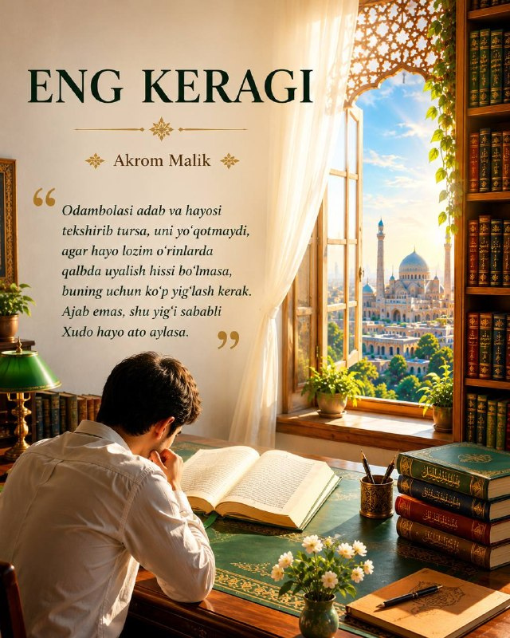

Mubtalolik – yomon balo. Biror zararli va qaytarilgan ishga berilib qolishning nomi…

Mubtalolik – yomon balo. Biror zararli va qaytarilgan ishga berilib qolishning nomi – mubtalolikdir. Qaysi ishdan Xudo va payg‘ambar qaytargan bo‘lsa, qaysi ishni oqil va donishmand, pok va ulug‘ insonlar yoqtirmasa, o‘sha ishda inson va insoniyat uchun xatar bor. U ishning ozi ham, ko‘pi ham odambolasini og‘ir ahvolga soladi. Bunday ishlardan kishi o‘zini qo‘riqlashi uchun unga aql berilgan. Aqlni muhofaza etish va o‘stirish uchun adab va xulq ato qilingan. Adab va xulqni o‘zlashtirish va hayotga tatbiq etish bilan aql ziyoda bo‘ladi, aql ko‘paysa, rivoj topsa, odam o‘zini muhlik illatlardan saqlashi osonlashadi.
Adabni o‘ziga bosh mezon va qoida qilgan xalqlarning peshonasi yorug‘, hayotlari qayg‘udan forig‘. Adabni lozim tutmaganlarning kecha-yu kunduzi vujudida og‘riqdir. Eng yomon ishlardan ham inson adab vositasi ila qutulib ketsa, ne ajab.
Adab va hayo egizdir. Adab – ko‘pligi odob – har kim va har narsaga u munosib muomalani qilishdir. Hayo – nomunosib ishlarga izn bermaydigan tuyg‘udir. Hayo qalqondir, bu qalqon qo‘ldan tushsa, dushmanlar hujumidan halokat sodir bo‘ladi.
Adabga ayrim misollar: ota-ona oldida oyoq uzatmaslik, chordona qurib o‘tirmaslik; kitob bor xonada yalang‘och bo‘lmaslik; odamlar ichida yengi kalta kiyim kiymaslik; kitoblarni yerga qo‘ymaslik; har qanday joyda ham ovozni baland qilib xoxolamaslik; hech kim yo‘q bo‘lsa ham, hayosiz narsalarga tikilmaslik; qayerda yomonlik sodir bo‘lsa, o‘sha yerdan tez ketish. Yomonliklarga fahsh va ichkilik misol bo‘ladi.
Erkak ham, ayol ham hayoga muhtoj. Hayo ko‘zdan boshlanadi. Ko‘zni nojoiz joylarga tikmaslik, nojoiz so‘zlarni eshitmaslik va nojoiz so‘zlarni aytmaslik hayodir. Tanani ochmaslik hayodir. Hayoning asl joyi – qalb. Qalbda nojoiz o‘ylar kelishidan uyalish – hayoning asli. O‘zining va o‘zganing sirini aytmaslik – hayo. O‘zining va o‘zganing ayblarini yashirish – hayo. O‘zini maqtamaslik, maqtov talab qilmaslik, maqtovdan noqulay holga tushish – hayo. Kimlar bilandir aytishmaslik, janjal qilmaslik – hayo. Boshqalarning ortidan gapirishdan uyalish – hayo.
Hayo pardasi tezda kuyadi. Kuygandan so‘ng uni qaytarish mumkin emas.
Odambolasi adab va hayosi tekshirib tursa, uni yo‘qotmaydi, agar hayo lozim o‘rinlarda qalbda uyalish hissi bo‘lmasa, buning uchun ko‘p yig‘lash kerak. Ajab emas, shu yig‘i sababli Xudo hayo ato aylasa.
Bugun adab va hayo gapirish noqulay. Chunki adab va hayo bugungi holimizdan uyalib, qochib ketgan bo‘lur edi. Bizga eng keragi adab va hayo, ammo olamda urug‘i qurib borayotgan hayot daraxti – adab va hayo.
Akrom MALIK